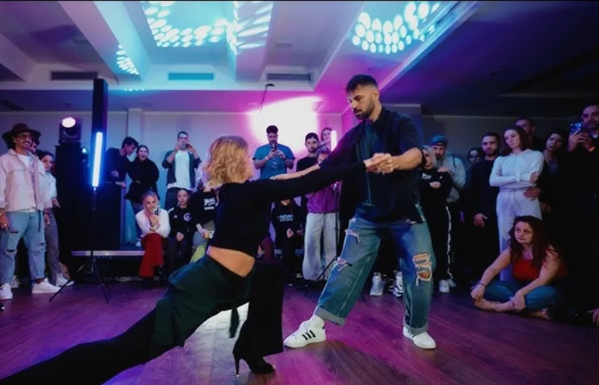
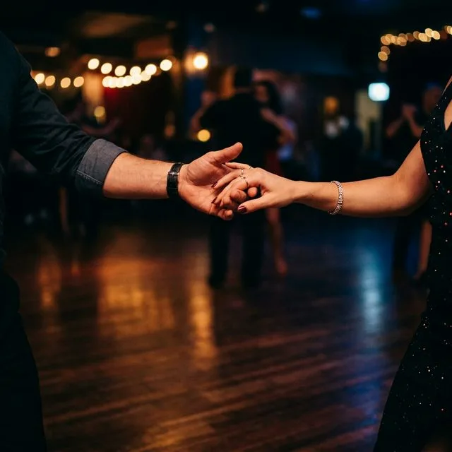

Foto: Marco Nuernberger, CC BY 2.0
Foto: Marco Nuernberger, CC BY 2.0
Bachata in Italia 2026: Perché Milano Sta Diventando una Meta Imperdibile per Ballare
Un nuovo sguardo su Milano come meta Bachata: accessibilità internazionale, Devero Hotel, workshop, party, social dancing e un weekend congressuale pensato per ballerini.
Leggi l'Articolo
Foto: Marco Nuernberger, CC BY 2.0
Full Pass 125€ fino al 31 Luglio
Il Full Pass costa ora 125€ fino alla mezzanotte del 31 luglio. L'upgrade Masterclass costa ora 65€, senza altri aumenti previsti.
Leggi l'Articolo
Miglior Social di Bachata in Italia 2026
Oltre 1.000 ballerini, artisti in pista, posti limitati, sold out lo scorso anno, due sale e più di 800 metri quadrati per ballare a Milano.
Leggi l'Articolo
Livelli Workshop Bachata
Una guida pratica per scegliere classi principianti, intermedie o avanzate nei Workshop Bachata di un congresso a Milano.
Leggi l'Articolo

Congresso Bachata 2026 in Europa
Una guida per ballerini internazionali che cercano congressi bachata 2026, workshop, party e un weekend di danza in Italia.
Leggi la GuidaEtichetta Congresso Bachata
Una guida pratica a social dancing, workshop e party per ballerini internazionali che vogliono sentirsi sicuri e rispettosi sulla pista del congresso.
Leggi l'Articolo

Riflettori sugli Artisti: David y Inés
Padronanza della fusione tra precisione tecnica e movimento fluido. Scopri perché David Morante e Inés Ferrero sono considerati tra gli educatori più disciplinati nel mondo della Bachata.
Leggi l'Articolo
Il Futuro: Agustin y Alba
Rappresentano la prossima generazione di maestri mondiali di Bachata Sensual. Scopri come questo giovane duo sta ridefinendo la scena con passione ed eccellenza tecnica.
Leggi l'Articolo

Riflettori sugli Artisti: Irene y Tomas
Ambasciatori ufficiali di Bachata Sensual formati da Korke e Judith. Vivi la purezza della metodologia autentica da Maiorca a Milano.
Leggi l'articolo
Riflettori sugli Artisti: Aitor Gomez
Scopri l'armonia perfetta tra le radici dominicane e la moderna Bachata Sensuale. Aitor Gomez porta la sua metodologia unica di footwork a Milano.
Leggi l'articolo

Riflettori sugli Artisti: Nacho y Silvia
Incontra le stelle nascenti dell'Esencia Group di Madrid. Nacho e Silvia portano un'energia fresca e maestria tecnica alla metodologia Esencia a Milano.
Leggi l'articolo
Riflettori sugli Artisti: Cristian y Gabriella
Vivi la precisione chirurgica e l'energia esplosiva di Cristian y Gabriella. I maestri spagnoli della Bachata Tecnica in arrivo a Milano.
Leggi l'articolo
Riflettori sugli Artisti: Klau y Ros
Scopri lo stile inconfondibile Endless Bachata di Klau y Ros. I maestri internazionali si uniscono al Milano Sensual Congress 2026.
Leggi l'articolo

Gero y Migle: I Maestri dell'Esencia Style
Scopriamo il viaggio e la chimica unica della coppia che sta trasformando la Bachata con il loro esclusivo "Esencia Style".
Leggi l'Articolo
Cosa Aspettarsi ad un Congresso di Bachata
La tua guida definitiva alla magia dei festival di danza. Imparare dalle icone, connessione sociale e trovare il proprio stile.
Leggi l'Articolo
Corsi Settimanali vs Congressi
Come migliorare il tuo stile Bachata combinando perfettamente le lezioni settimanali locali e i congressi internazionali.
Leggi l'ArticoloI 5 Migliori Congressi Bachata 2026
Stai pianificando il tuo calendario? Ecco gli eventi d'élite da non perdere quest'anno.
Vedi i Congressi Bachata 2026
Volantino Ufficiale 2026 e Super Early Bird
L'attesa è finita! Siamo entusiasti di svelare il volantino ufficiale del Milano Sensual Congress 2026. I biglietti Super Early Bird sono ora disponibili.
Acquista Biglietto